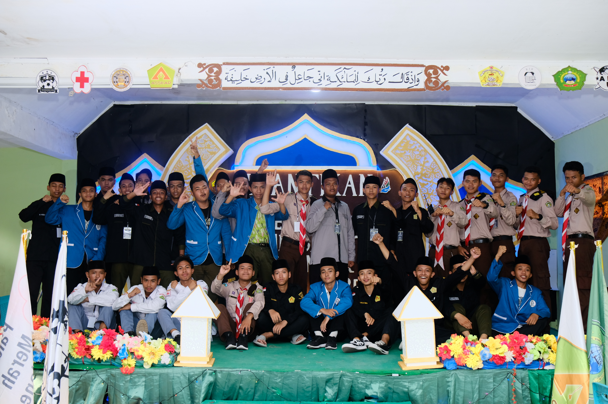

Halo, Saya Moh. Fahri IzulHaq
Seorang WEB DEVELOPMENT
Tentang Saya
Halo! nama saya Moh. Fahri IzulHaq, umur saya 18 tahun. Saya tinggal di Desa Bulu, Kecamatan Balen, Kabupaten Bojonegoro.
Saat ini, saya sedang menempuh studi s1 Teknik Informatika Di Universitas Nahdlatul Ulama Sunan Giri Bojonegoro. saya memiliki minat besar terhadap WEB Development. Portofolio ini berisi contoh-contoh proyek, karya,dan pengalaman yan telah saya kumpulkan selama masa studi, yang di harapkan dapat memberikan gambaran tentang kemampuan dan potensi saya di bidang Teknologi Informasi.

Portofolio
| NO | Nama Kegiatan | Waktu Kegiatan | Bukti Kegiatan |
| 1 | Panitia Pelantikan P3 Ekstra Se Madrasah | 28 Februari 2024 |  |
| 2 | Peserta IT Camp Dengan Tema Sinergi Teknologi Dan Inovasi Dalam Kebersamaan | 21 - 22 Desember 2024 |  |
| 3. | Peserta Bootcamp Staf Magang HMP-TI | 22 - 23 Februari 2025 |  |
| 4. | Diklat Management Karya Ilmiah Remaja | 18 - 19 januari 2024 |  |
| 5. | Lomba Karya Tulis Ilmiah | 2 - 3 November 2023 |  |
| 6. | Diklat Management PPM | 16 - 17 Maret 2023 |  |